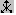

Insert > Plot command
Use the 3D-plot window Insert > Plot command, click on the  icon on the command toolbar, or press the F4 key to plot the expression highlighted in the algebra window associated with the active 3D-plot window. The file 3D-plotExamples.dfw in the Users\Plotting directory includes several expressions that are interesting to plot in a 3D-plot window.
The Insert > Plot command is only available if there is a highlighted expression in the algebra window. If you wish to stop the plotting before completion, press the Esc key.
The type of plot made is based on the form of the expression being plotted as follows:
• Explicit function plots are made when plotting equations of the form z = u, where z is a variable and u is a constant, a univariate expressionUnivariate_expression, or a bivariate expressionBivariate_expression independent of z (for example, z=2, z=x^2, z=x^2-y^2, and x=SIN(y)+SIN(z)). Explicit plots are also made when plotting nonequations of two or fewer variables (for example, 2, x^2, x^2-y^2, and SIN(y)+SIN(z)).
• Data point plots2.DQ_BX are made when plotting data points of the form [a, b, c] where a, b, and c are constants, or collections of such points (for example,
[1, 1, 1]
plots as a single point).
• Parametric plots are made when plotting three-element vectors of the form [u, v, w] where u, v, and w are bivariate expressions dependent on the same two variables (for example, in rectangular coordinates
[SIN(s)/COS(t), COS(s)/COS(t), SIN(t)]
plots as a worm hole in space if s varies from −π to π and t varies from −1.3 to 1.3).
Plots can be made using rectangular, spherical, or cylindrical coordinates (for details, see the Set > Coordinate System commandI8C1RB).
More than one expression can be plotted at a time by making a vector of the expressions. However a three element vector will be plotted as a single parametric expression, rather than three separate expressions.
3D surface plots are made by repeatedly evaluating the expression being plotted to determine the coordinates of an array of points on the surface. Connecting adjacent points by straight line segments and shading the panels approximates the shape of the surface. (Note that only real finite values are plotted and connected to their neighbors.) Projecting and plotting this three dimensional surface on a two dimensional computer screen allows you to visualize the surface.
If the 3D-plot window Insert > Plot command results in the warning message
Too many variables for this plot window!
the highlighted expression has 3 or more independent variables and cannot be plotted. If the command results in the message
Invalid plot type
or the message
Sorry, the highlighted expression cannot be plotted
the highlighted expression was not one of the above forms, and cannot be plotted in its present form.
Use the Plot Parameters dialog box displayed by the Insert > Plot command and the Edit > Plot command765F8R to set the number of grid panels in the x and y directions. Note that the number of grid panels is one less than the number of grid lines for each direction. When plotting parametric surfaces, the Minimum and Maximum fields allow you to set the minimum and maximum values of the two independent variables. When plotting data points, the Point Size field allows you to choose Small, Medium, or Large points.
You can increase or decrease the number of grid lines in either the x or y direction or both. Increasing the grid lines allows more surface detail to be resolved until a point is reached where the grid lines start running together. This point of diminishing returns depends on the expression, the resolution of your graphics mode, and the size of your plot window.
The computation time and storage requirements increase with the number of grid panels. If the warning message
Insufficient memory to perform operation
is displayed while computing a 3D plot, reduce the number of grid panels to complete the plot.
Use the Plot Color dialog box displayed by the Insert > Plot command and the Edit > Plot command765F8R to control the color of 3D plots. The dialog box displays the following fields:
Use the Scheme drop down menu to select the color scheme for the 3D plot (Rainbow, Wire Grid, Gray Scale, Red & Blue Checker, Heat Wave, Auto Plot Color, or Custom).
If the Custom color scheme is selected, use the Color by drop down menu to select the method used to color the 3D plot (z value, Gradient, or Checkerboard).
Top:
• Click the Minimum button to select the color of the top of the surface at its minimum value.
• Click the Maximum button to select the color of the top of the surface at its maximum value.
Bottom:
• Click the Minimum button to select the color of the bottom of the surface at its minimum value.
• Click the Maximum button to select the color of the bottom of the surface at its maximum value.
Mesh Lines:
• Pull-down the Grids menu to select the color of the grid lines when the 3D plot is not selected.
• Pull-down the Trace menu to select the color of the grid lines when the 3D plot is selected.
• Click the On radial button to display plot mesh lines.
• Click the Off radial button to hide plot mesh lines.
Other 3D-plot Window CommandsAR2HOH